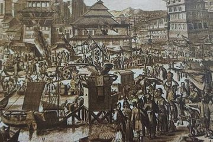

Banten mencapai puncak kejayaannya pada masa pemerintahan Sultan Ageng Tirtayasa. Kejayaan tersebut berhasil diraih dalam berbagai bidang seperti politik, ekonomi, perdagangan, kebudayaan, maupun keagamaan. Dalam bidang politik misalnya, Banten selalu membangun hubungan persahabatan dengan daerah-daerah lainnya. Daerah-daerah sahabat Banten yang berada di wilayah nusantara antara lain Cirebon, Lampung, Gowa, Ternate, dan Aceh. Selain itu, Kesultanan Banten juga menjalin hubungan persahabatan dengan negara-negara lain yang jauh dari nusantara. Salah satunya adalah dengan mengirim utusan diplomatik ke Inggris yang dipimpin oleh Tumenggung Naya Wipraya dan Jaya Sedana pada 10 November 1681.
Dalam bidang ekonomi, Sultan Ageng Tirtayasa berhasil mengembangkan perdagangan Banten. Pada masanya, Banten menjadi salah satu tempat transit utama perdagangan internasional. Pedagang-pedagang dari berbagai negara, seperti Inggris, Perancis, Denmark, Portugis, Iran, India, Arab, Cina, Jepang, Filipina, Malayu, dan Turki datang ke sini untuk memasarkan barang komoditas dari negeri mereka. Walaupun saat itu Banten menghadapi persaingan dengan VOC, tetapi Sultan Ageng Tirtayasa tetap mampu menarik pedagang mancanegara tersebut untuk tetap berdagang di Banten. Hal ini disebabkan Banten tidak menerapkan monopoli perdagangan seperti yang dijalankan oleh VOC.
Sultan Ageng Tirtayasa juga mendirikan keraton baru di wilayah Tirtayasa untuk memperkuat pertahanan kesultanannya. Dengan pembangunan keraton ini, wilayah Tirtayasa terus dibuka. Beliau membangun jalan dari Pontang ke Tirtayasa. Tidak hanya itu, Sultan Ageng juga membuka lahan-lahan persawahan sepanjang jalan tersebut serta mengembangkan pemukiman warga di daerah Tangerang.
